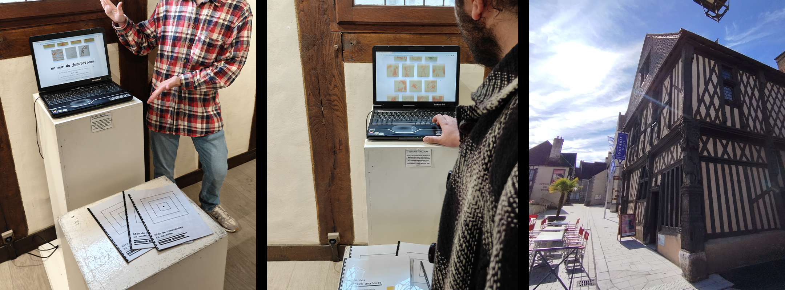

Exposition : 11ème salon des artistes amateurs – Un mur de fabulation
11:50
05/04/2025
Pour la troisième année, j'ai exposé au salon des artistes amateurs organisé par la ville d'Aubigny-sur-Nère. Cette année j'ai pu présenter le projet "un mur de fabulations", projet collaboratif réalisé en tandem avec Camille Protat. Pastiche du monde physique par le numérique, avec une volonté de dédramatiser l'objet technique et d'éduquer sur le code, découvrez "un mur de fabulations".
Ce week-end, samedi 4 avril, se tenait le vernissage de l’exposition du salon des artistes amateurs organisée par la ville d’Aubigny-sur-Nère. J’ai pu y présenter le projet "un mur de fabulations", réalisé en tandem avec Camille Protat.
"un mur de fabulations" est un projet collaboratif réalisé dans le but de retranscrire un mur physique rempli de post-its, en une expérience numérique pastichant l’exploration visuelle de ce dit mur. Les différents dessins et autres inscriptions présents sur les post-it sont le fruit de la classe de master 2 DIMI, promo 2025-2026 de l’université Sorbonne Paris Nord de Villetaneuse. Cet aspect collaboratif permet de voir les différentes références, les imaginaires et autres cultures qui façonnent les individualités de chacun ; une classe peut être perçue comme un ensemble, "la classe" ou bien comme une collection d’individualité, de personnalité, de singularité. L’ensemble des post-it donnent à voir cette diversité tout en imitant les caractéristiques du monde réel, en explorant visuellement le mur.

À gauche et au centre : photo par Manu ;) ; à droite : photo de la Galerie François 1er.Sur ce projet, Camille P. a réalisé le code permettant de mettre en place le design et la mise en forme du mur numérique que j’ai fait. Ce projet revêt un aspect plus personnel que nous souhaitions mettre en avant ; j’ai pu participer les deux dernières années à l’exposition, à chaque fois en présentant un art/design numérique, mais toujours imprimé et donné à voir sur un support papier. Cette année, la proposition utilise pleinement le numérique en ce qu’elle nécessite un ordinateur pour être explorée. En ramenant un outil technologique dans une galerie d’art, nous avons décidé d’ajouter une dimension pédagogique au projet, en ajoutant un livret expliquant le code qui nous as servi a réaliser "un mur de fabulations".
L’objectif est de dédramatiser l’objet technique, que ce soit en montrant les possibilités du code et de l’informatique comme un potentiel artistique, ou encore d’éduquer sur le numérique, le code et ses possibilités. Cela se traduit dans le livret avec un ton très posé et prenant le temps d’expliquer de manière compréhensible par tous un langage technique. Le code y est expliqué avec des mots simples, sans être trop technique, en proposant aussi un petit tutoriel ayant pour but de faire écrire les premières lignes de codes pour des personnes pouvant être étrangères à ce domaine. Enfin ce projet, ainsi que sa mise en place dans la salle d’exposition, considère cette technologie (autant le support physique, l’ordinateur que le code qui exécute le projet) comme devenu normée et quotidienne. Proposant de voir une technologie consumériste, de surveillance et les possibilités de détournement afin de proposer des expériences sensibles et plus humaines.
Nous adressons notre gratitude à la ville d’Aubigy-sur-Nère pour nous avoir permis d’exposer ce projet.
L’exposition est disponible du samedi 4 avril 2026 au dimanche 12 avril 2026 à la galerie François premier à Aubigny-Sur-Nère.
Lien vers le livret en version PDF
Lien vers le compte LinkedIn de Camille Protat
Lien vers le portfolio de Camille Protat
Merci pour votre lecture, bonsoir.